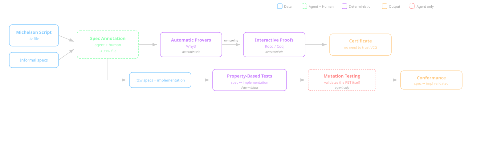
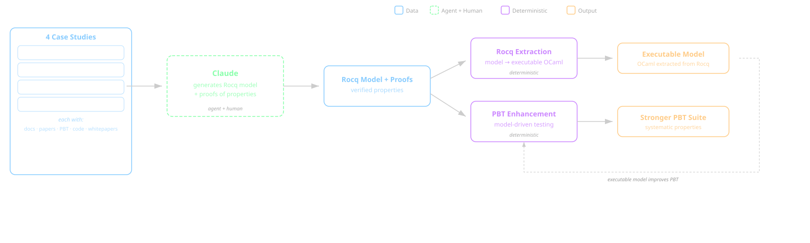

Stop Pedaling
First Principles for Spec-Driven Agentic Development
Yann Régis-Gianas
Head of Engineering, Nomadic Labs · @yurug
"Most teams using AI agents are putting a motor on a bicycle."
The new reality
IDEAS → [agents] → SOFTWARE
What are you feeding in? What's coming out?
"Ne pas confondre
vitesse et précipitation."
Garbage in, garbage out — at full speed.
Fix the harness, not the output.
Knowledge & Spec · Architecture · Feedback loop
Five hours.
From zero to a working AI-assisted verifier for Michelson.
Michelson Verifier Pipeline

The cost barrier just fell.
AI reduced the cost. The rigor stayed exactly the same.
Formal verification with Claude

"The tools we built for correctness
are the same tools agents need for quality."
Our culture IS the harness.
Our factory is already built.
Are you running the line — or still assembling by hand?